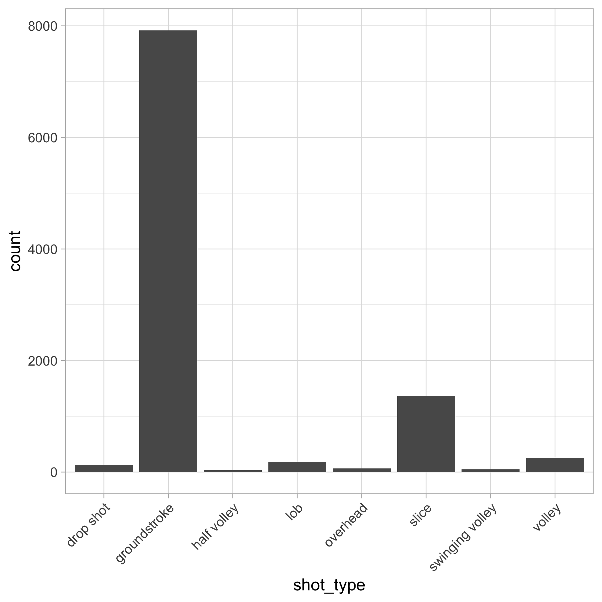
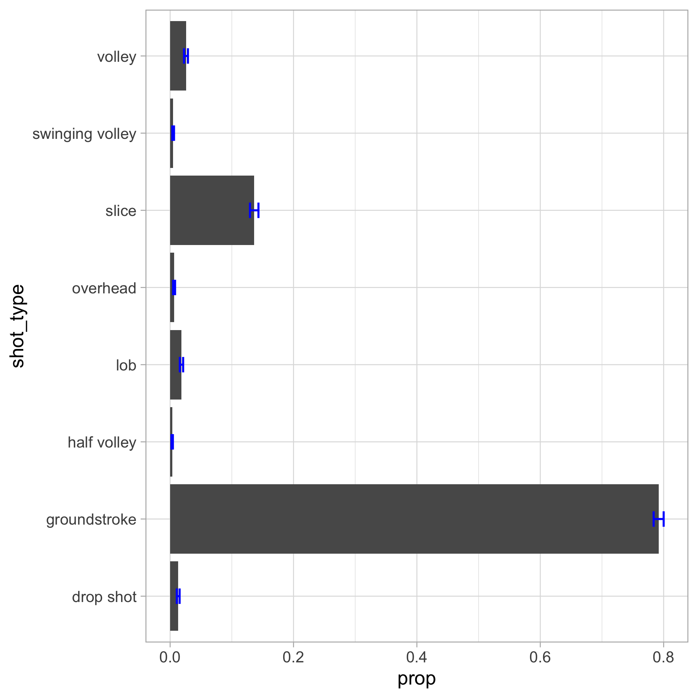
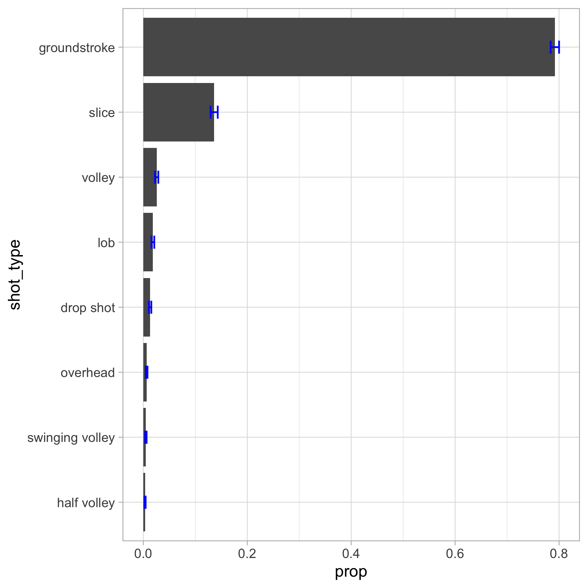
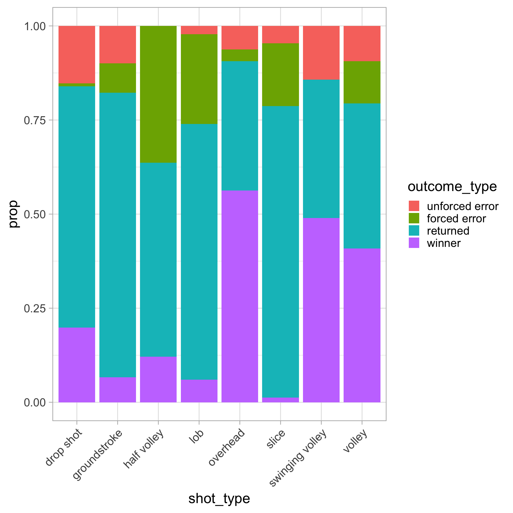
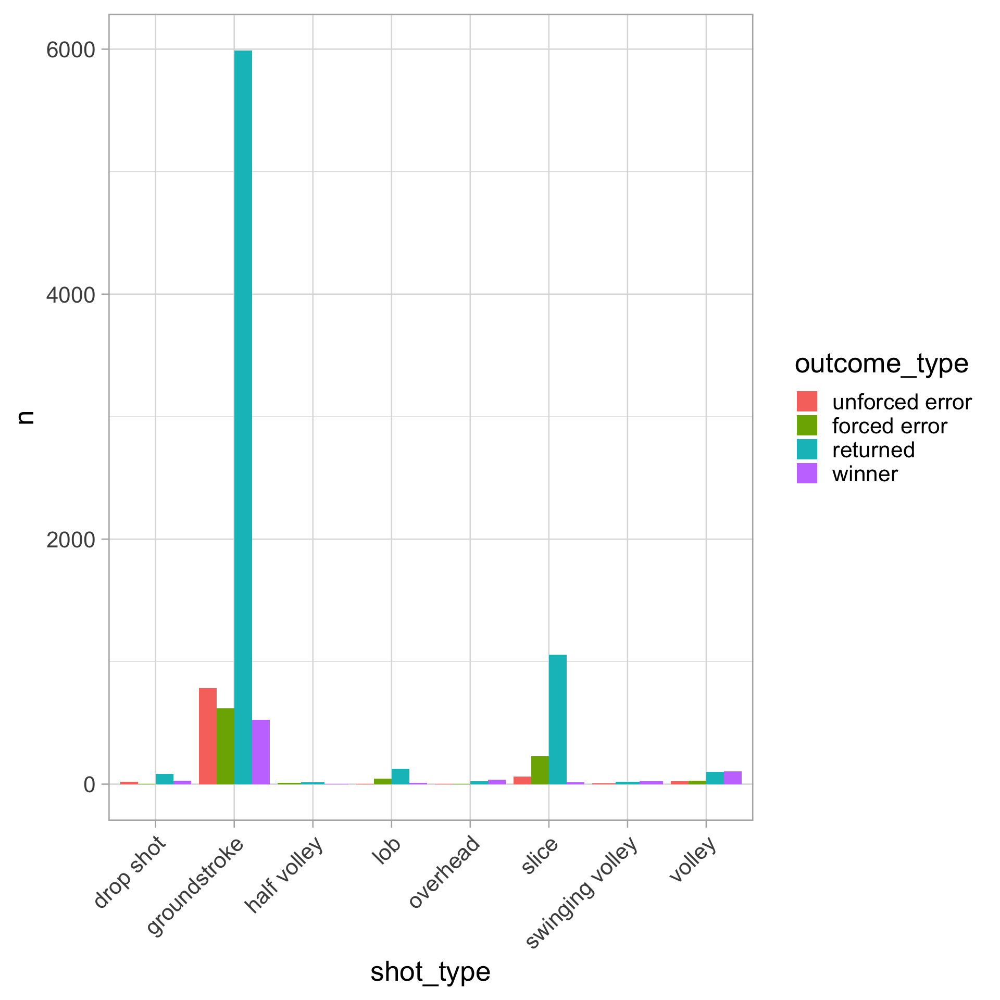
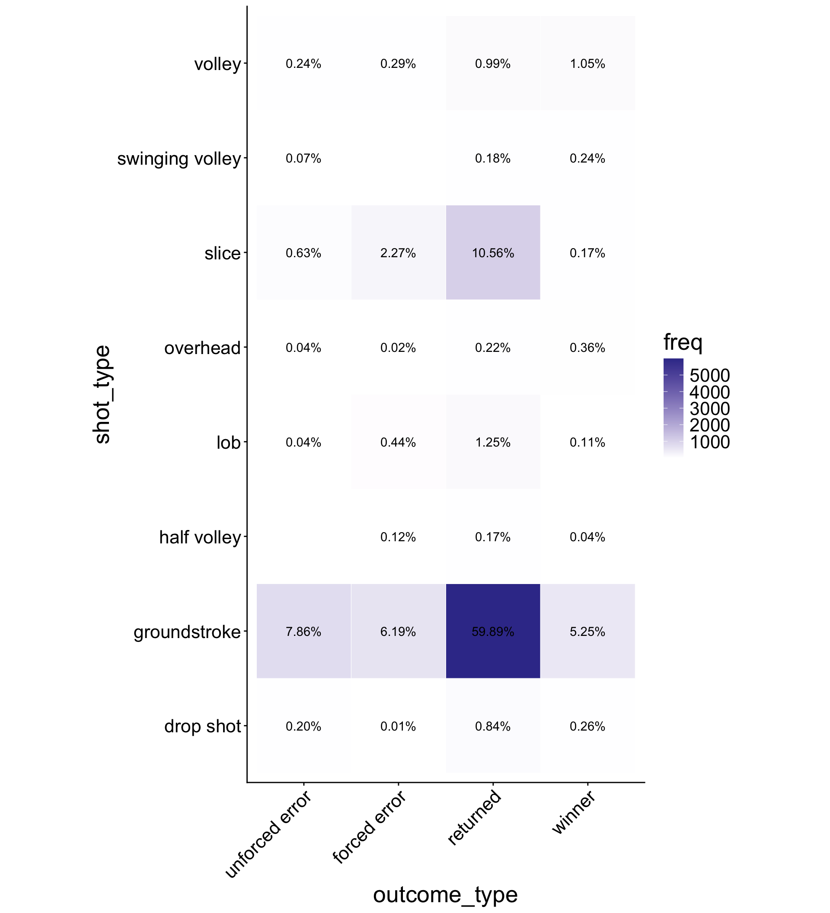
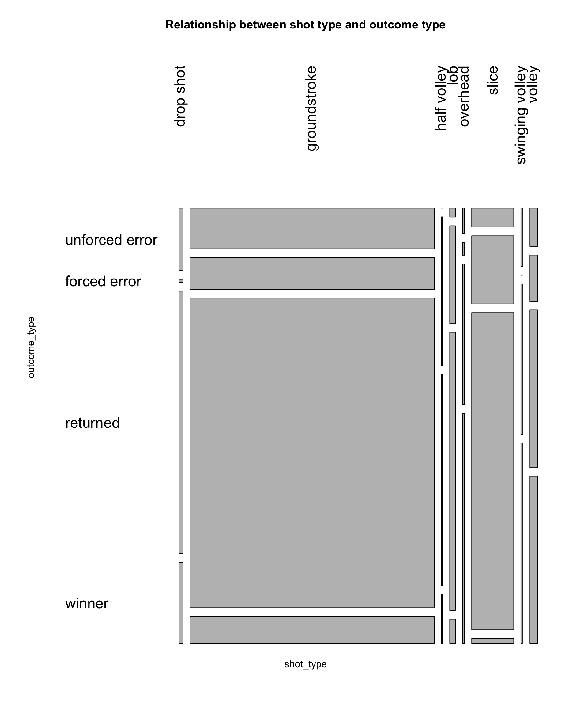
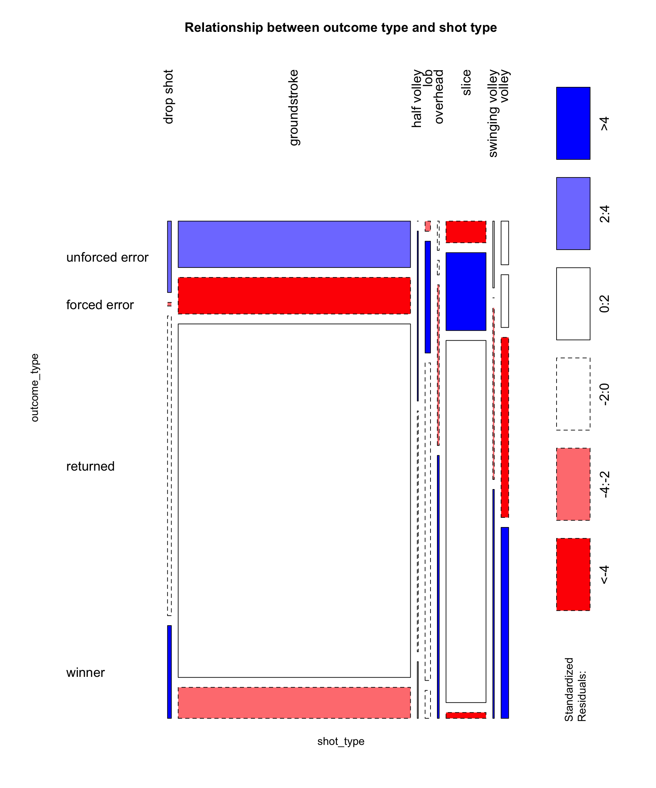
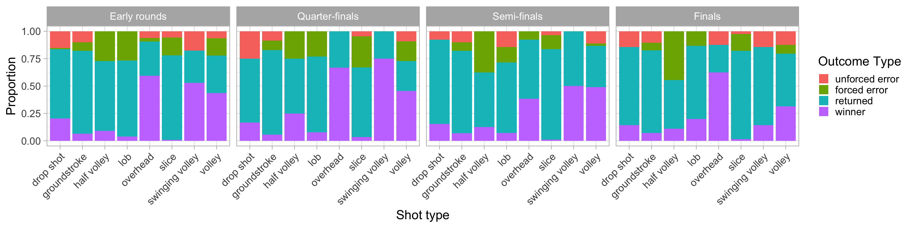

# set seed for reproducibility
set.seed(4747)
# import data from current working directory
tennis_shots <- read_csv("tennis-w-shots-wim.csv.gz") |>
# tidy names
janitor::clean_names() |>
# remove serves
filter(shot_type != "serve") |>
# NA = shot did not produce an outcome (i.e., returned)
mutate(outcome_type = if_else(is.na(outcome_type),"returned", outcome_type)) |>
# replace "_" with " " in all character variables
mutate(across(where(is.character), ~ str_replace_all(., "_", " "))) |>
# convert date into ymd format
mutate(date = ymd(date)) |>
# random sample of sample 10,000 observations
dplyr::slice_sample(n = 10000)Data visualization: categorical data
CMSACamp 2026
Department of Statistics & Data Science
Carnegie Mellon University
Background
Data
Our dataset is Wimbledon women’s tennis shot-level data
The original data is publicly available on the SCORE Sports Data Repository
We will look at a random sample of 10,000 (non-serve) shots
The data was pre-processed slightly for this lecture:
Data
Let’s begin by importing the data:
library(tidyverse)
theme_set(theme_light()) # setting the ggplot theme
tennis_shots <- read_csv("https://raw.githubusercontent.com/36-SURE/2026/main/data/tennis_w_shots_wim.csv") |>
# filter out NAs for shot_type and outcome_type
filter(!is.na(shot_type), !is.na(outcome_type)) |>
# convert characters into factors
mutate(across(where(is.character), as.factor)) Categorical data
Two different versions of categorical data:
Nominal: categorical variables having unordered scales
- Examples: race, gender, species, etc.
Ordinal: ordered categories; levels with a meaningful order
- Examples: education level, grades, ranks, etc.
Factors in R
In
R, factors are used to work with categorical variablesRtreats factors as ordinal - defaults to alphabetical- May need to manually define the factor levels (e.g., the reference level)
See the
forcatspackage (automatically loaded withtidyverse)
1D categorical data
Summarizing 1D categorical data
How often is each shot type used during women’s singles at the Wimbledon Championships?
Frequency tables (counts)
drop shot groundstroke half volley lob overhead
131 7919 33 184 64
slice swinging volley volley
1363 49 257 Summarizing 1D categorical data
Proportion table
drop shot groundstroke half volley lob overhead
0.0131 0.7919 0.0033 0.0184 0.0064
slice swinging volley volley
0.1363 0.0049 0.0257 # A tibble: 8 × 3
shot_type n prop
<fct> <int> <dbl>
1 drop shot 131 0.0131
2 groundstroke 7919 0.792
3 half volley 33 0.0033
4 lob 184 0.0184
5 overhead 64 0.0064
6 slice 1363 0.136
7 swinging volley 49 0.0049
8 volley 257 0.0257Visualizing 1D categorical data

Behind the scenes of geom_bar()
- Start with the data
- Aggregate and count the number of observations in each bar
- Map to plot aesthetics

Visualizing 1D categorical data
Instead of using geom_bar(), you can do these steps “by hand”
Aggregate and obtain the counts first with
count()(orgroup_byandsummarize())Then use
geom_col()

Visualizing 1D categorical data
What does a bar chart show?
Marginal distribution: probability that a categorical variable \(X\) (e.g., shot_type) takes each particular category value \(x\) (groundstroke, lob, …, slice)
Frequency bar charts (earlier version) give info about sample size, but this could be labeled in the chart (use
geom_text()orgeom_label())Now, we create a proportion/percent bar chart to display the individual probabilities
This shows the probability mass function (PMF) for discrete variables
- For example: \(P(\)
shot_type\(=\)slice\()\)
- For example: \(P(\)
Population vs sample
Population: The collection of all subjects of interest
Sample: A representative subset of the population of interest
For us: Our random sample of women’s Wimbledon (non-serve) shots is a subset of all women’s Wimbledon (non-serve) shots
Empirical distribution: estimates the true marginal distribution with observed (sample) data
Estimate \(P(\)
shot_type= \(C_j\)) with \(\hat p_j\) for each category \(C_j\) (e.g., \(\hat p_\texttt{dropshot}\), …, \(\hat p_\texttt{volley}\))Standard error for each \(\hat p_j\): \(\quad \displaystyle \text{SE}(\hat{p}_j) = \sqrt{\frac{\hat{p}_j (1 - \hat{p}_j)}{n}}\)
Adding confidence intervals to bar chart
We can add confidence intervals by calculating the standard error estimate for each category

Ordering factors in a bar chart
Let’s order the bars by proportion
tennis_shots |>
count(shot_type) |>
mutate(prop = n / sum(n),
se = sqrt(prop * (1 - prop) / sum(n)),
lower = prop - 2 * se,
upper = prop + 2 * se,
shot_type = fct_reorder(shot_type, prop)) |>
ggplot(aes(x = prop, y = shot_type)) +
geom_col() +
geom_errorbar(aes(xmin = lower, xmax = upper),
color = "blue", width = 0.2, linewidth = 1)
Pie charts… don’t make them
Why?
A particularly painful pie chart from Fox News on 2012 GOP candidates:

3D pie charts?… even worse
Inference for 1D categorical data
Chi-square test for 1D categorical data
Null hypothesis: \(H_0\): \(p_1 = p_2 = \cdots = p_K\)
Alternative hypothesis: \(H_1\): At least one category has a different proportion
Test statistic:
\[\displaystyle \chi^2 = \sum_{j=1}^K \frac{(O_j - E_j)^2}{E_j},\]
where
\(O_j\): observed counts in category \(j\)
\(E_j\) : expected counts under the null (i.e., \(n/K\) or each category is equally likely to occur)
Hypothesis testing in general
Computing \(p\)-values works like this:
Choose a test statistic
Compute the test statistic using the observed data
Is test statistic “unusual” compared to what we would expect under the null hypothesis (\(H_0\))?
Compare \(p\)-value to the pre-specified target Type I error rate (“significance level”) \(\alpha\)
- Typically choose \(\alpha = 0.05\) (the origins of 0.05)
| Decision | \(H_0\) true | \(H_1\) true |
|---|---|---|
| Fail to reject \(H_0\) | Correct decision | Type II error (\(\beta\)) |
| Reject \(H_0\) | Type I error (\(\alpha\)) | Correct decision |
2D categorical data
Summarizing 2D categorical data
Continuing with our women’s Wimbledon tennis sample, let’s look at two attributes:
shot_type(What was the shot type?)outcome_type(What was the shot’s outcome?)
How many levels does each variable have?
Summarizing 2D categorical data
Two-way table (or contingency table, cross tabulation, crosstab)
Outcome type
Shot type unforced error forced error returned winner
drop shot 20 1 84 26
groundstroke 786 619 5989 525
half volley 0 12 17 4
lob 4 44 125 11
overhead 4 2 22 36
slice 63 227 1056 17
swinging volley 7 0 18 24
volley 24 29 99 105 outcome_type
shot_type unforced error forced error returned winner
drop shot 20 1 84 26
groundstroke 786 619 5989 525
half volley 0 12 17 4
lob 4 44 125 11
overhead 4 2 22 36
slice 63 227 1056 17
swinging volley 7 0 18 24
volley 24 29 99 105Visualizing 2D categorical data
Stacked bar chart: a bar chart of spine charts
Emphasizes the marginal distribution of each category of the X variable
- e.g., \(P(\)
outcome_type\(=\)winner\()\)
Similar to 1D bar charts:
Start with counting every combination of 2 variables (using
count()orgroup_by()andsummarize()),Plot with
geom_col()
Visualizing 2D categorical data
Stacked bar chart (proportion version)
Just make sure to change the y-axis title (at least)!

Visualizing 2D categorical data
Side-by-side (grouped, dodged) bar chart: a bar chart of bar charts
Shows the conditional distribution of fill variable given X variable
For example: \(P(\) outcome_type \(=\) winner \(\mid\) shot_type \(=\) groundstroke \()\)

Joint, marginal, and conditional probabilities
Let \(X\) = shot_type and \(Y\) = outcome_type
Joint distribution: frequency of the intersection
- e.g., \(P(X =\)
overhead\(, Y =\)winner\()\)
- e.g., \(P(X =\)
Marginal distribution: row sums or column sums
- e.g., \(P(X =\)
overhead\()\), \(P(Y =\)winner\()\)
- e.g., \(P(X =\)
Conditional distribution: probability event \(X\) given event \(Y\)
- e.g., \(P(X =\)
overhead\(\mid Y =\)winner\()\)
\(\displaystyle \qquad \quad = \frac{P(X = \texttt{overhead}, Y = \texttt{winner})}{P(Y = \texttt{winner})}\)
- e.g., \(P(X =\)
Joint, marginal, and conditional probabilities
Two-way proportion table (the tidyverse way) with pivot_wider
# A tibble: 8 × 5
# Groups: shot_type [8]
shot_type `unforced error` `forced error` returned winner
<fct> <dbl> <dbl> <dbl> <dbl>
1 drop shot 0.002 0.0001 0.0084 0.0026
2 groundstroke 0.0786 0.0619 0.599 0.0525
3 half volley 0 0.0012 0.0017 0.0004
4 lob 0.0004 0.0044 0.0125 0.0011
5 overhead 0.0004 0.0002 0.0022 0.0036
6 slice 0.0063 0.0227 0.106 0.0017
7 swinging volley 0.0007 0 0.0018 0.0024
8 volley 0.0024 0.0029 0.0099 0.0105Categorical heatmaps
Use
geom_tile()to display joint distribution of two categorical variablesAnnotate tiles with labels of percentages using
geom_text()and thescalespackage (a very neat package)
#install.packages("scales")
tennis_shots |>
group_by(shot_type, outcome_type) |>
summarize(
freq = n(),
joint = n() / nrow(tennis_shots)
) |>
ggplot(aes(x = shot_type, y = outcome_type)) +
geom_tile(aes(fill = freq), color = "white") +
geom_text(aes(label = scales::percent(joint, accuracy = 0.01))) +
scale_fill_gradient2() +
coord_equal() +
theme_classic() +
theme(axis.text.x = element_text(angle = 45,
vjust = 1, hjust = 1))
Visualizing independence
Mosaic plot
A spine chart of spine charts
Width: marginal distribution of
shot_typeHeight: conditional distribution of
outcome_type|shot_typeArea: joint distribution
Using a mosaic plot to visually check for independence:
- Check whether all proportions are the same (i.e., the boxes line up in a grid)

Visualizing independence
Mosaic plot with ggmosaic package
Inference for 2D categorical data
Chi-square test for 2D categorical data
Null hypothesis: \(H_0\): two categorical variables are independent of each other
- e.g., no association between
shot_typeandoutcome_type
- e.g., no association between
Alternative hypothesis: \(H_1\): two categorical variables are dependent
Test statistic:
\[\displaystyle \chi^2 = \sum_i^{k_1} \sum_j^{k_2} \frac{(O_{ij} - E_{ij})^2}{E_{ij}}\]
Residuals
Recall the test statistic:
\[\displaystyle \chi^2 = \sum_i^{k_1} \sum_j^{k_2} \frac{(O_{ij} - E_{ij})^2}{E_{ij}}\]
Define the Pearson residuals:
\[\displaystyle r_{ij} = \frac{O_{ij} - E_{ij}}{\sqrt{E_{ij}}}\]
Some rules of thumb:
\(r_{ij} \approx 0\): observed counts are close to expected counts
\(|r_{ij}| > 2\): significant at \(\alpha = 0.05\)
very positive \(r_{ij}\): higher than expected
very negative \(r_{ij}\): lower than expected
Residuals
We can make mosaic plots with the cells color-coded by Pearson residuals
Tells us which combinations of 2 categorical variables (cells) are much higher/lower than expected

Beyond 2D: facets!
Using some dplyr data wrangling and ggplot2 material…
tennis_shots |>
filter(!(round %in% c("Q1", "Q2", "Q3"))) |>
mutate(round_grouped = case_when(
round == "F" ~ "Finals",
round == "SF" ~ "Semi-finals",
round == "QF" ~ "Quarter-finals",
TRUE ~ "Early rounds")) |>
mutate(round_grouped = fct_relevel(round_grouped, "Early rounds", "Quarter-finals", "Semi-finals", "Finals")) |>
ggplot(aes(x = shot_type, fill = outcome_type)) +
geom_bar(position = "fill") + # could remove position = "fill" to get raw counts
labs(x = "Shot type", y = "Proportion", fill = "Outcome Type") +
facet_wrap(~ round_grouped, ncol = 4) +
theme(axis.text.x = element_text(angle = 45, vjust = 1, hjust = 1))
Appendix
The janitor package
The most popular janitor function is clean_names()… for cleaning column names
Sepal.Length Sepal.Width Petal.Length Petal.Width Species
1 5.1 3.5 1.4 0.2 setosa
2 4.9 3.0 1.4 0.2 setosa
3 4.7 3.2 1.3 0.2 setosa
4 4.6 3.1 1.5 0.2 setosa
5 5.0 3.6 1.4 0.2 setosa
6 5.4 3.9 1.7 0.4 setosa sepal_length sepal_width petal_length petal_width species
1 5.1 3.5 1.4 0.2 setosa
2 4.9 3.0 1.4 0.2 setosa
3 4.7 3.2 1.3 0.2 setosa
4 4.6 3.1 1.5 0.2 setosa
5 5.0 3.6 1.4 0.2 setosa
6 5.4 3.9 1.7 0.4 setosaTabulation with the janitor package
The lesser-known stars of janitor: functions for tabulation of categorical data
The tabyl() function:
Tabulation with the janitor package
The adorn_*() functions
| shot_type | unforced error | forced error | returned | winner |
|---|---|---|---|---|
| drop shot | 15.27% (20) | 0.76% (1) | 64.12% (84) | 19.85% (26) |
| groundstroke | 9.93% (786) | 7.82% (619) | 75.63% (5,989) | 6.63% (525) |
| half volley | 0.00% (0) | 36.36% (12) | 51.52% (17) | 12.12% (4) |
| lob | 2.17% (4) | 23.91% (44) | 67.93% (125) | 5.98% (11) |
| overhead | 6.25% (4) | 3.12% (2) | 34.38% (22) | 56.25% (36) |
| slice | 4.62% (63) | 16.65% (227) | 77.48% (1,056) | 1.25% (17) |
| swinging volley | 14.29% (7) | 0.00% (0) | 36.73% (18) | 48.98% (24) |
| volley | 9.34% (24) | 11.28% (29) | 38.52% (99) | 40.86% (105) |